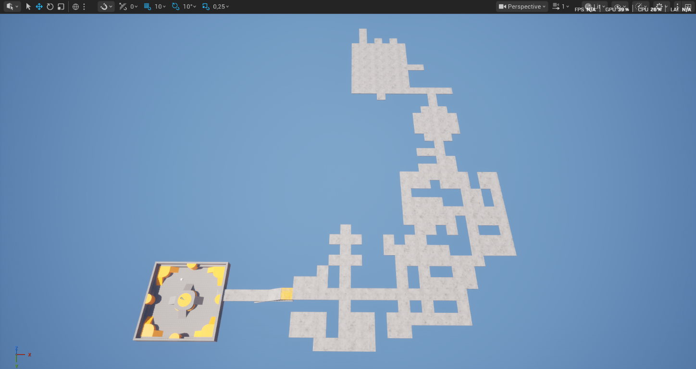
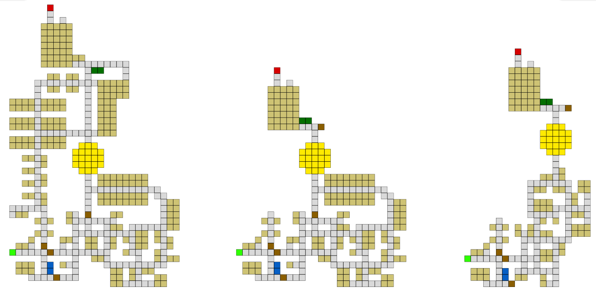
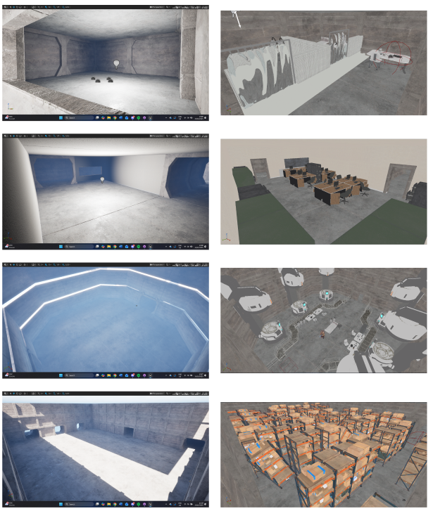

Sublevel
Atmospheric exploration · Level design · Unreal Engine
- Contribution
- Level design, environment blockout, lighting
- Focus
- Horror exploration
- Engine
- Unreal Engine 5.6
Overview
Sublevel is a horror exploration game set in an abandoned underground bunker. I designed the level around a simple question: how can the space make players curious about what lies around the next corner? Rather than relying on constant prompts, I used a connected route of rooms and corridors to give exploration its own momentum.
My work moved from planning the overall route to testing spaces in Unreal. The images below show that progression, from early layout ideas to room blockouts that helped me consider scale, atmosphere, and the player’s view.


Design approach
Spatial design & player flow
I used connected corridors, rooms, branches, and loops to make the bunker feel larger and less predictable. The route gives players reasons to explore while keeping the next part of the journey discoverable.
The layout shifts between tight passages and more open spaces. That contrast controls the pace: a brief release from confinement makes the next narrow passage feel more intense. I considered how one area leads into the next so that changes in space also change the player's expectations.
Atmosphere & lighting
I used contrast between cold industrial light and darker areas to shape the mood. Selective lighting gives players enough information to navigate while preserving a sense of uncertainty.
Testing the lighting from the player's perspective helped me tune brightness and shadows so the bunker felt atmospheric without making the route impossible to read. Light became part of the navigation language: it could draw attention to a space, while darkness kept parts of the environment unknown.
Environmental storytelling
I wanted the bunker to feel like a place built for a purpose, rather than a set of empty corridors. Modular walls, storage, and environmental details establish that practical foundation.
The route and its changing spaces then leave room for players to wonder what happened there. This lets the environment suggest a story without stopping exploration for exposition; players can interpret the space at their own pace.
Structure & set dressing
Repeated wall panels create a consistent industrial structure, while props and storage add variation to individual rooms. I kept their scale and placement in balance with the paths players need to navigate.
I treated these details as part of the level design, not decoration added at the end: they help establish scale and give rooms distinct identities. The result is a space that feels functional but unsettling.
Development
From route plan to blockout
I first mapped the route and explored different ways the rooms could connect. Once the layout felt promising on paper, I moved it into Unreal as a blockout. Testing the rooms in 3D helped me judge their scale, sightlines, and connections before spending time on detail.
These early room studies let me compare spaces and adjust them from the player's point of view. I then used lighting and environmental detail to carry the bunker from a navigable blockout toward a more unsettling place.

What I learned
- Pacing can come from the spaceAlternating tight and open areas, branches, and loops can build tension without adding more game systems.
- Blockouts reveal problems earlyTesting navigation and scale with simple geometry makes it easier to revise the layout before adding detail.
- Test from the player's perspectiveA level can feel very different in gameplay than in the editor. In-game testing helped me adjust lighting and shadows to suit the actual view.
- Let the environment tell part of the storyProps and spatial design can suggest what happened without dialogue, leaving players room to interpret the bunker.
- Lighting is a design toolLight direction, color, and contrast can guide attention and shape how a space feels, not just decorate it.